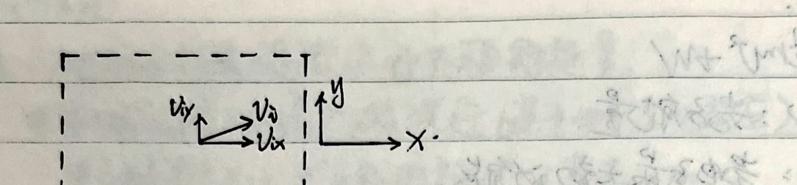
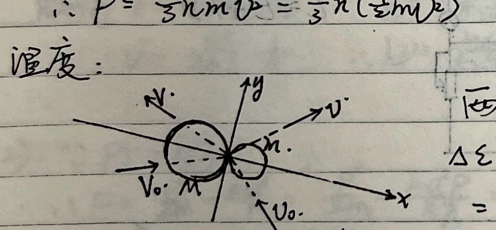
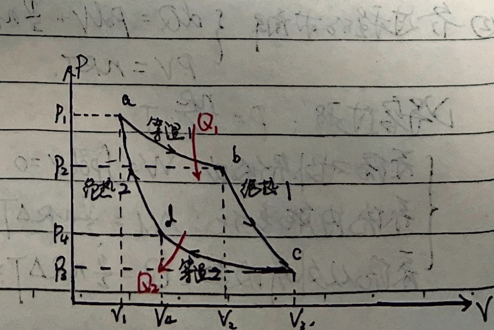
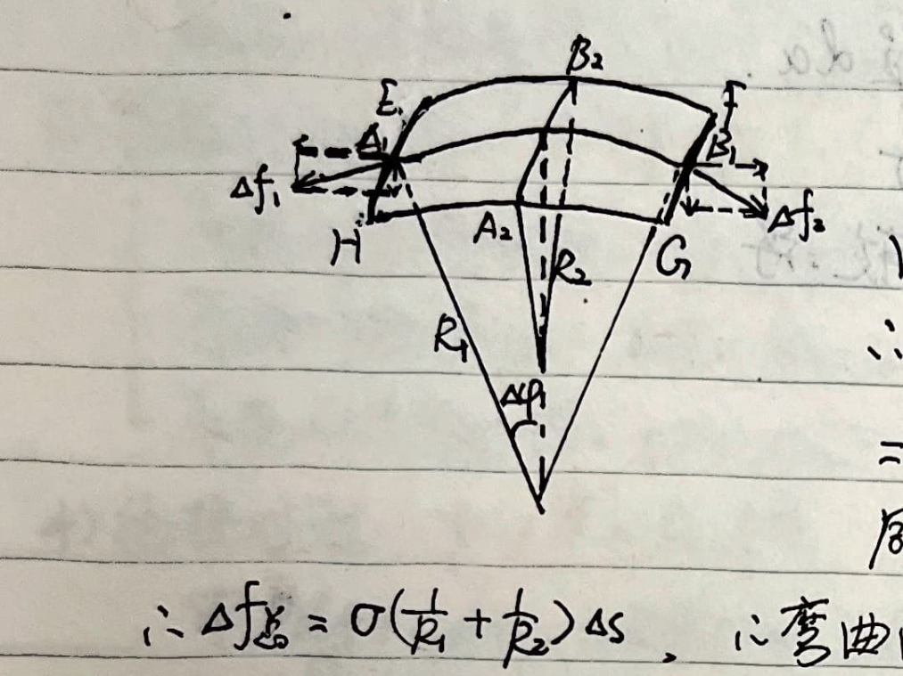
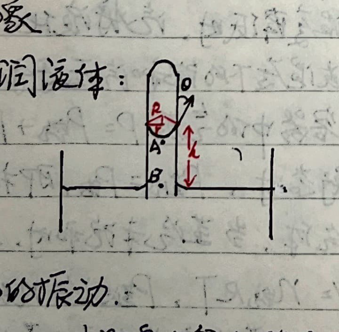
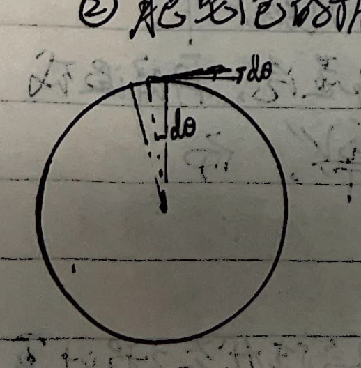

Part 6: Ideal Gas
1. Pressure:

$$ p = \frac{\Delta F}{\Delta S} = \frac{\Sigma I_i}{\Delta S \Delta t} = \frac{\frac{1}{2}\Sigma (m \cdot n \cdot v_{ix} \Delta t \cdot \Delta S) \cdot 2v_{ix}}{\Delta S \cdot \Delta t} $$In the above equation, $m(n v_{ix} \Delta t \Delta S)$ is the mass of the molecules in a cuboid hitting the container wall in time $\Delta t$.
$\frac{1}{2}$ represents that the probability of $v_{ix}$ in the $\pm x$ directions are both $\frac{1}{2}$. Since we only study the case of molecules hitting the right wall, we only take $\frac{1}{2}$.
$$ \therefore p = n m \frac{\Sigma v_{ix}^2 \cdot n_i}{n} $$ $$ \because \overline{v_x^2} = \frac{\Sigma v_{ix}^2 n_i}{n} = \frac{1}{3}\overline{v^2} $$ $$ \therefore P = \frac{1}{3} n m \overline{v^2} = \frac{2}{3} n \left(\frac{1}{2} m \overline{v^2}\right) $$2. Temperature:

After two molecules undergo elastic collision, the kinetic energy lost by molecule $M$:
$$ \Delta E = \frac{1}{2}M(v_{ox}^2 - v_x^2) \quad (v_{oy} = v_y) $$ $$ = \frac{1}{2}M(v_{ox}-v_x)(v_{ox}+v_x) $$From conservation of momentum:
$$ v_x = \frac{M v_{ox} + m v_{ox}'}{M+m} - \frac{m(v_{ox}-v_{ox}')}{M+m} = \frac{(M-m)v_{ox} + 2m v_{ox}'}{M+m} $$ $$ \therefore v_{ox} - v_x = \frac{2m(v_{ox}-v_{ox}')}{M+m}, \quad v_{ox} + v_x = \frac{2M v_{ox} + 2m v_{ox}'}{M+m} $$ $$ \therefore \Delta E = \frac{2mM}{(M+m)^2} [M v_{ox}^2 - m v_{ox}'^2 - (M-m)v_{ox}' v_{ox}] $$Taking the average for a large number of molecules $M$, we get:
$$ \overline{\Delta E} = \frac{2mM}{(M+m)^2} [M \overline{v_{ox}^2} - m \overline{v_{ox}'^2} - (M-m)\overline{v_{ox}' v_{ox}}] $$ $$ \because \overline{v_{ox}} = \overline{v_{ox}'} = 0 \quad \therefore \overline{v_{ox}' v_{ox}} = 0 $$ $$ \therefore \overline{\Delta E} = \frac{2mM}{3(M+m)^2} (M \overline{v^2} - m \overline{v'^2}) \quad \left(\overline{v_x^2} = \frac{1}{3}\overline{v^2}\right) $$ $$ \propto \frac{1}{2}M\overline{v^2} - \frac{1}{2}m\overline{v'^2} $$From the zeroth law of thermodynamics, the average kinetic energy of molecules has the macroscopic characteristic of temperature, so we set:
$$ \frac{1}{2}m\overline{v^2} = B \cdot T $$3. Ideal Gas Equation of State:
From $P = \frac{2}{3}n\left(\frac{1}{2}m\overline{v^2}\right)$ and $BT = \frac{1}{2}m\overline{v^2}$, we have
$$ P = \frac{2}{3}nBT = \frac{2}{3}\frac{N}{V}BT = \frac{2}{3}\frac{\nu N_A}{V}BT \quad (n: \text{number density}, \nu: \text{moles}) $$ $$ \therefore PV = \frac{2}{3}\nu N_A BT $$Let $R = \frac{2}{3}N_A B$, we get:
$$ PV = \nu RT. \quad \therefore T = \frac{1}{B}\left(\frac{1}{2}m\overline{v^2}\right) = \frac{2N_A}{3R}\left(\frac{1}{2}m\overline{v^2}\right). $$Deduction: $PV = \frac{M}{\mu}RT = \frac{\rho V}{\mu}RT$, $\therefore \mu P = \rho RT$.
For the same gas: $\frac{P_1 V_1}{T_1} = \frac{P_2 V_2}{T_2}, \quad \frac{P_1}{\rho_1 T_1} = \frac{P_2}{\rho_2 T_2}$.
For all gases in the same system: $\frac{P_{\text{total}} V_{\text{total}}}{T_{\text{total}}} = R \sum \nu_i = \sum \frac{P_i V_i}{T_i}$.
4. First Law of Thermodynamics Applied to Ideal Gas
($\nu$: number of moles)
① Thermodynamic processes: The process of the system state changing with time (state variables: $P, T, V$).
$$ \begin{cases} \text{Quasi-static (准静态): } \text{every intermediate state is approximately an equilibrium state.} \\ \text{Non-quasi-static (非静态): } \text{intermediate states cannot be considered equilibrium states (cannot be represented on a P-V diagram).} \end{cases} $$1) Work: $dW = F dl = PS dl = P dV$.
2) Heat: $dQ = \nu C dT \quad (C: \text{molar heat capacity. For solids } C \text{ is constant. For gases } C \text{ can vary})$.
3) Internal energy: $dU = \frac{i}{2}\nu R dT$ (Molecular thermal motion: translation, rotation, vibration + potential energy between atoms in molecule).
$i = t + r + 2s \quad (t: \text{translational degrees of freedom} = 3; r: \text{rotational degrees of freedom} = 2, 1, 0; s: \text{vibrational degrees of freedom} = 3N-6)$.
For monoatomic molecules: $U = N \cdot \left(\frac{1}{2}m\overline{v^2}\right) = N \cdot \frac{3}{2}BT = \frac{3}{2}\nu RT$.
First Law of Thermodynamics: $U_0 + Q - W = U_t, \quad dQ = dU + dW$.
(Heat absorbed $Q$ is positive, work done by system on surroundings $W$ is positive).
② Analysis of various processes: $dQ = P dV + \frac{i}{2} \nu R dT, \quad PV = \nu RT$.
1) Isochoric process (等容过程): $P = \frac{\nu R}{V} \cdot T$.
$$ \begin{cases} \text{Work done by system on surroundings: } W = \int P dV = 0. \\ \text{Change in system internal energy: } \Delta U = \frac{i}{2} \nu R \Delta T. \\ \text{Heat absorbed by system from surroundings: } Q = \frac{i}{2} \nu R \Delta T = \nu C_V \Delta T. \end{cases} $$2) Isobaric process (等压过程): $V = \frac{\nu R}{P} \cdot T$.
$$ \begin{cases} \text{Work done by system on surroundings: } W = \int P dV = P \Delta V = \nu R \Delta T. \\ \text{Change in system internal energy: } \Delta U = \frac{i}{2} \nu R \Delta T = \nu C_V \Delta T. \\ \text{Heat absorbed by system from surroundings: } Q = \nu(C_V+R)\Delta T = \nu C_P \Delta T. \end{cases} $$3) Isothermal process (等温过程): $P = \frac{\nu RT}{V}$.
$$ \begin{cases} \text{Work done by system on surroundings: } W = \int_{V_1}^{V_2} P dV = \nu RT \int_{V_1}^{V_2} \frac{dV}{V} = \nu RT \ln\frac{V_2}{V_1} = -\nu RT \ln\frac{P_2}{P_1}. \\ \text{Change in system internal energy: } \Delta U = \frac{i}{2} \nu R \Delta T = 0. \\ \text{Heat absorbed by system from surroundings: } Q = \nu RT \ln\frac{V_2}{V_1}. \end{cases} $$4) Adiabatic process (绝热过程): $PV^\gamma = P_0 V_0^\gamma$.
From $P dV + V dP = \nu R dT$ and $\nu C_V dT + P dV = dU + dW = 0$, we get:
$$ \frac{C_V}{R} (P dV + V dP) + P dV = 0 \implies \frac{R+C_V}{C_V} \frac{dV}{V} = -\frac{dP}{P}. $$Integrating gives $\ln\frac{V}{V_0} = -\frac{C_V}{C_P} \ln\frac{P}{P_0} \dots \implies PV^{\frac{C_P}{C_V}} = P_0 V_0^{\frac{C_P}{C_V}} \implies PV^\gamma = P_0 V_0^\gamma$.
$$ \begin{cases} \text{Work done by system: } W = \int_{V_1}^{V_2} P dV = \int_{V_1}^{V_2} \frac{P_0 V_0^\gamma}{V^\gamma} dV = \left. P_0 V_0^\gamma \frac{1}{1-\gamma} V^{1-\gamma} \right|_{V_1}^{V_2} \\ \quad = -\frac{C_V}{R} P_0 V_0^\gamma (V_2^{-\frac{R}{C_V}} - V_1^{-\frac{R}{C_V}}) = \dots \\ \quad = \frac{C_V}{R} (P_1 V_1 - P_2 V_2) = \frac{C_V}{R} (\nu R T_1 - \nu R T_2) = \nu C_V (T_1 - T_2). \\ \text{Internal energy change: } \Delta U = \nu C_V (T_2 - T_1) = \nu C_V \Delta T. \\ \text{Heat absorbed: } Q = 0. \end{cases} $$5) Carnot cycle of ideal gas (卡诺循环):

(1) $Q_1 = \nu R T_1 \ln\frac{V_b}{V_a}$: Isothermal expansion $ab$ absorbs heat $Q_1$ from high temp source $T_1$.
(2) $T_1 V_b^{\gamma-1} = T_2 V_c^{\gamma-1}$: Adiabatic process $bc$.
(3) $Q_2 = \nu R T_2 \ln\frac{V_c}{V_d}$: Isothermal compression $cd$ releases heat $Q_2$ to low temp source $T_2$.
(4) $T_2 V_d^{\gamma-1} = T_1 V_a^{\gamma-1}$: Adiabatic process $da$.
From (2) and (4) we get: $\frac{V_b}{V_a} = \frac{V_c}{V_d}$. Substituting into (3) yields:
$$ Q_2 = \nu R T_2 \ln\frac{V_b}{V_a} $$Comparing with (1) we get: $\frac{Q_1}{T_1} = \frac{Q_2}{T_2}$
$$ \therefore \eta = \frac{A}{Q_1} = \frac{Q_1 - Q_2}{Q_1} = 1 - \frac{T_2}{T_1}. $$5. Saturated and Unsaturated Vapor
($n_{\text{evap}} = n_{\text{cond}}$ vs $n_{\text{evap}} > n_{\text{cond}}$)
Properties:
- At the same temperature, the saturated vapor pressures of different liquids are generally different.
- The saturated vapor pressure of a given liquid increases rapidly with temperature. Thus, when the volume of saturated vapor decreases or the temperature drops, the vapor will liquefy.
- The condition for liquid boiling is that the saturated vapor pressure of the liquid at that temperature equals the external pressure.
Calculation: According to Dalton's law of partial pressures: gas pressure in a closed container $P = P_{\text{gas}} + P_{\text{vapor}}$.
When there is liquid water in the container and it's in an equilibrium state, $P_{\text{vapor}} = P_{\text{sat}}$, which corresponds to 100% relative humidity.
For a mixture of air and water vapor, when the vapor is unsaturated, it approximately follows the ideal gas equation of state, i.e., $P_{\text{gas}} V = \nu_{\text{gas}} R T$, $P_{\text{vapor}} V = \nu_{\text{vapor}} R T$, and $PV = \nu_{\text{total}}RT$.
When temperature drops, water vapor turns into saturated vapor; if temperature drops further or pressure increases, water vapor will partially liquefy. At this time $P_{\text{sat}} V' = \nu_{\text{vapor}}' R T$, and $P_{\text{gas}}' V' = \nu_{\text{gas}} R T$.
For a mixture of air and water vapor, if there is no liquid water present, it can be calculated using the ideal gas equation of state.
$$ \rho = \frac{M_{\text{gas}} \cdot \nu_{\text{gas}} + M_{\text{vapor}} \cdot \nu_{\text{vapor}}}{V} \quad (M_{\text{gas}} = 28.8 \text{ g/mol}, M_{\text{vapor}} = 18 \text{ g/mol}). $$And definitions: Absolute humidity = $P_{\text{vapor}}$, Relative humidity = $\frac{P_{\text{vapor}}}{P_{\text{sat}}}$ (where $P_{\text{sat}}$ is the saturated vapor pressure at that temperature).
Part 7: Liquids and Solids
1. Surface Tension of Liquids
$$ F = \sigma L \quad (\text{Direction: normal to the drawn line, tangent to the liquid surface}) $$Property: For a non-planar liquid surface, surface tension will cause a pressure difference between inside and outside. As shown in the figure:

Let $\widehat{AB} = \widehat{EF} = \widehat{HG} = \Delta l_1$, $\widehat{A_1B_1} = \widehat{HE} = \widehat{GF} = \Delta l_2$.
Because the horizontal components of $\Delta f_1$ and $\Delta f_2$ cancel each other,
$$ \therefore \text{The combined effect of } \Delta f_1 \text{ and } \Delta f_2 \text{ is } (\Delta f_1 + \Delta f_2)\Delta\varphi = 2\sigma \Delta l_2 \Delta\varphi = 2\sigma \Delta l_2 \cdot \frac{A_1B_1}{2R_1} = \frac{\sigma}{R_1} \Delta l_1 \Delta l_2 = \frac{\sigma}{R_1} \Delta S. $$Similarly, for $\widehat{A_2B_2}$ there is a combined force $\frac{\sigma}{R_2}\Delta S$.
$$ \therefore \Delta f_{\text{total}} = \sigma\left(\frac{1}{R_1} + \frac{1}{R_2}\right)\Delta S $$$\therefore$ The pressure difference caused by the curved surface is $p = \frac{\Delta f_{\text{total}}}{\Delta S} = \sigma\left(\frac{1}{R_1} + \frac{1}{R_2}\right)$.
Where $R_1, R_2$ are the principal radii of curvature of two mutually perpendicular normal sections.
$$ \begin{cases} \text{For a spherical surface, additional pressure } p_1 = \frac{2\sigma}{R} \\ \text{For a spherical bubble film, additional pressure } p_2 = 2p_1 = \frac{4\sigma}{R} \end{cases} $$① Capillary Phenomenon
For a wetting liquid:

$$ \because p_A = p_0 - \frac{2\sigma}{R}. $$ $$ p_B = p_A + \rho g h = p_0. $$ $$ \therefore h = \frac{2\sigma}{\rho g R}. \quad \text{Also } \because R\cos\theta = r, \quad \therefore h = \frac{2\sigma\cos\theta}{\rho g r}. $$② Vibration of a Soap Bubble

When the soap bubble radius expands by $x$, the surface has:
$$ df_{\text{total}} = P_0 ds + \frac{4\sigma}{R+x} ds - p' ds \quad (P_0 \text{ is atmospheric pressure}). $$At equilibrium, $P_0 ds + \frac{4\sigma}{R} ds = P ds$. $\therefore P = P_0 + \frac{4\sigma}{R}$.
Due to isothermal change, $\therefore P \cdot \frac{4}{3}\pi R^3 = P' \cdot \frac{4}{3}\pi (R+x)^3$. $\therefore P' = \left(\frac{R}{R+x}\right)^3 \cdot \left(P_0 + \frac{4\sigma}{R}\right)$.
$$ \therefore df_{\text{total}} = P_0\left[1 - \left(\frac{R}{R+x}\right)^3\right] ds + 4\sigma\left[\frac{1}{R+x} - \frac{R^2}{(R+x)^3}\right] ds $$ $$ \approx P_0\left[1 - \frac{R^3}{R^3+3R^2x}\right] ds + 4\sigma\left[\frac{1}{R+x} - \frac{R^2}{R^3+3R^2x}\right] ds $$ $$ \approx P_0\left(1 - \frac{R-3x}{R}\right) ds + 4\sigma\left(\frac{R-x}{R^2} - \frac{R-3x}{R^2}\right) ds $$ $$ = \frac{3x}{R}P_0 ds + \frac{2x}{R^2} 4\sigma ds. $$ $$ \therefore dk = \frac{3P_0 ds}{R} + \frac{8\sigma ds}{R^2}. $$ $$ \therefore T = 2\pi \sqrt{\frac{dm}{dk}} = 2\pi \sqrt{\frac{\frac{ds}{4\pi R^2} m}{\left(\frac{3P_0}{R} + \frac{8\sigma}{R^2}\right) ds}} = 2\pi \sqrt{\frac{m}{12\pi R P_0 + 32\pi \sigma}}. $$The work done by surface tension during this process:
$$ W = \int_{R_1}^{R_2} \frac{4\sigma}{R} \cdot 4\pi R^2 \cdot dR = 16\pi\sigma \int_{R_1}^{R_2} R dR = 8\pi\sigma(R_2^2 - R_1^2). $$Similarly, calculating with surface free energy:
$$ W = (2\sigma)(S_2 - S_1) = 2\sigma(4\pi R_2^2 - 4\pi R_1^2) = 8\pi\sigma(R_2^2 - R_1^2) $$(Because a liquid film has two surfaces, each surface doing work $\sigma\Delta S$, two surfaces doing work to overcome surface tension is $2\sigma\Delta S$).
2. Solids:
① Crystal Types:
- Single crystal: Anisotropy.
- Polycrystal: Isotropy.
- Amorphous solid: Isotropy.
- Liquid: Isotropy.
- Liquid crystal: Anisotropy.
② Thermal Expansion:
Let the length of a solid at $0^\circ\text{C}$ and $t^\circ\text{C}$ be $l_0$ and $l$. We have:
$$ l = l_0(1 + \alpha t), \quad dl = \alpha l_0 dt. $$Let the volume of a solid at $0^\circ\text{C}$ and $t^\circ\text{C}$ be $V_0$ and $V$. We have:
$$ V = V_0(1 + \beta t), \quad dV = \beta V_0 dt. $$And $\beta = 3\alpha$.
③ Phase Changes:
For the same solid: heat of fusion $Q_1 = \lambda m$; heat of vaporization $Q_2 = L m$.
Heat of sublimation $Q_3 = Q_1 + Q_2 = (\lambda + L)m$.
④ Heat Conduction:
Let there be a plate of cross-sectional area $S$ and thickness $x$. The two sides of the plate maintain a temperature difference $\Delta T$.
The heat $dQ$ flowing perpendicular to the plate surface in time $dt$ is:
$$ H = \frac{dQ}{dt} = -k S \cdot \frac{\Delta T}{x} $$ $$ \begin{cases} \text{Multi-layer plates in series: } H = \frac{-S\Delta T}{\sum (x_i/k_i)} \\ \text{Multi-layer plates in parallel: } H = -\frac{\Delta T}{x} \sum (k_i S_i) \end{cases} \quad \text{(Similar to the series and parallel connections of resistors, capacitors, inductors, and springs)}. $$